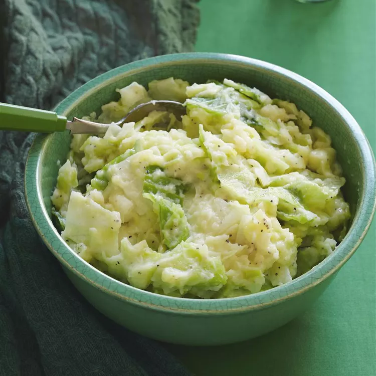

Colcannon

Ingredients
- 1 pound potatoes
- 1 pound green cabbage, sliced
- 2 small leeks, cleaned and thinly sliced
- 1 cup milk, or as needed
- Salt and pepper, to taste
- 1 pinch ground mace
- 1/2 cup butter.
Steps
- Place potatoes into a large pot, cover with salted water. Reduce heat to medium-low and simmer until tender, about 15-20 mins. Drain.
- As the potatoes boil, simmer or steam cabbage in a seperate pot until tender. Drain & chop, keep warm.
- Place leeks in a small pot; add enough milk to cover. Simmer over low heat until leeks are soft, 3-5 mins.
- Season potatoes with salt & pepper and mace; mash well. Stir in cooked leeks adn milk. Stir in cabbage and heat through until potatoes are pale green.
- Make a well in the center of the colcannon and pour in the melted butter. Mix well & serve.
Go back